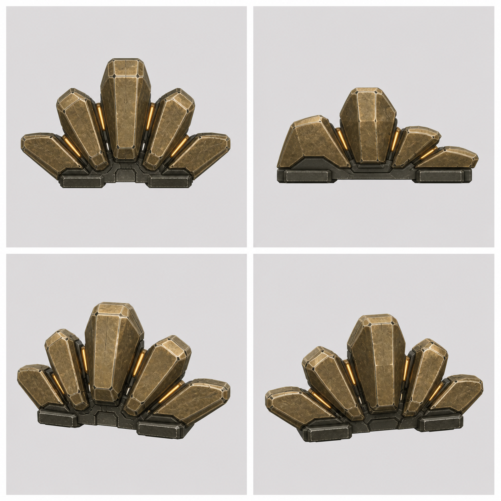
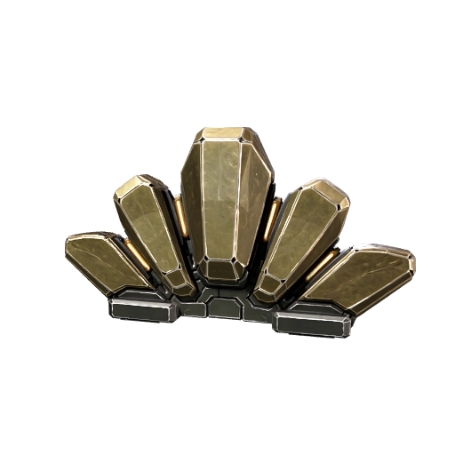
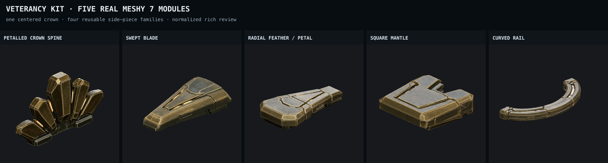
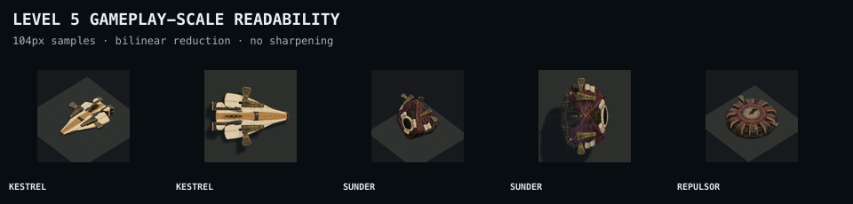
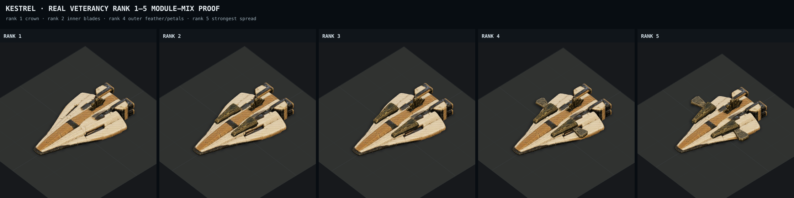

The crown and feathers are real now.
Five distinct Meshy 7 attachment families, including a corrected five-petal command crown and the radial armored feather/petal. These are rich static-review models only; nothing has entered the game runtime.
The earlier blade-only sheet and procedural crown proxy are retired. The current compositions use the actual corrected crown GLB plus real inner and outer module pairs.
1 · Corrected petaled crown
The first paid crown result was a low bridge and failed the approved roster silhouette. This replacement is one connected five-petal mechanical crest: dominant center spine, two stepped swept pairs, graphite shared base, and restrained amber separations.





2 · The complete five-family kit

3 · Level 5 with crown and feathers
Kestrel is a deliberate module-mix proof so the corrected crown and radial feathers can be judged together on a flat familiar chassis. Sunder, Repulsor, and Longshot show plan-mapped combinations beside it.


4 · Real rank progression

5 · Isolated module evidence


What still needs approval
- These rich results are roughly 52–66 MB and 1.52–1.99 million triangles apiece. They are visual proof, not mobile assets.
- The full all-sixteen fit pass is not complete. Sunder already demonstrates why fit profiles need per-chassis height and spread rather than one generic mount.
- Lean derivatives, the 1.5 MB package target, renderer integration, rank animation, and replay evidence all remain behind silhouette approval.
Open the five-family batch audit · Open the composition capture record · Open the original pilot audit